Neste guia, vamos explorar como as novas regras do Cursor podem transformar sua produtividade no desenvolvimento. Com a inteligência artificial ao seu lado, você aprenderá a aplicar regras específicas que aceleram o processo de codificação e tornam o design mais eficiente.
Índice
- ✨ Passo 1: Introdução ao Cursor e Suas Novas Regras
- ⚙️ Passo 2: Como Configurar Seu Arquivo de Regras do Cursor
- 📜 Passo 3: Regras Globais para o Editor de Código Cursor
- 🔍 Passo 4: Adicionando Regras Específicas do Projeto
- 📂 Passo 5: Criando um Novo Arquivo de Regras
- 📝 Passo 6: Definindo a Descrição e os Globs das Regras
- 📂 Passo 7: Estrutura do Projeto com Frontend e Backend Separados
- 🔍 Passo 8: Encontrando Regras no Diretório do Cursor
- 📦 Passo 9: Usando Prompts do Supabase para Migrações de Banco de Dados
- 🗒️ Passo 10: Explorando a Funcionalidade Notepads
- 🌐 Passo 11: Pesquisando na Web Diretamente Dentro do Cursor
- 📚 Passo 12: Adicionando Documentação Personalizada
- 🎨 Passo 13: Gerando Imagens com Ferramentas MCP
- 🔚 Passo 14: Conclusão e Próximos Passos
- ❓ Perguntas Frequentes
✨ Passo 1: Introdução ao Cursor e Suas Novas Regras
O Cursor é uma ferramenta revolucionária que transforma a forma como desenvolvedores interagem com seus projetos. Com as novas regras do Cursor, você pode personalizar sua experiência de codificação, tornando-a mais eficiente e alinhada às suas necessidades específicas.
Essas regras não apenas aumentam o controle sobre o editor, mas também permitem que você construa aplicações de maneira extremamente rápida. Vamos explorar como você pode aproveitar ao máximo essas novas funcionalidades!
O que são as regras do Cursor?
As regras do Cursor são instruções que você define para orientar o comportamento da inteligência artificial durante o desenvolvimento. Elas podem ser globais ou específicas para projetos, oferecendo flexibilidade e personalização.
- Regras globais: Aplicadas a todos os projetos que você abrir com o Cursor.
- Regras específicas do projeto: Permitem que você defina instruções detalhadas para cada projeto individualmente.
⚙️ Passo 2: Como Configurar Seu Arquivo de Regras do Cursor
A configuração do arquivo de regras do Cursor é um passo essencial para otimizar sua experiência de desenvolvimento. Vamos ver como você pode fazer isso de forma simples e direta.
Primeiro, você deve acessar as configurações do Cursor. Uma vez lá, você encontrará a opção para adicionar suas regras. O método antigo, que utilizava um arquivo .cursor_rules, foi substituído por um novo formato que permite maior especificidade nas regras.
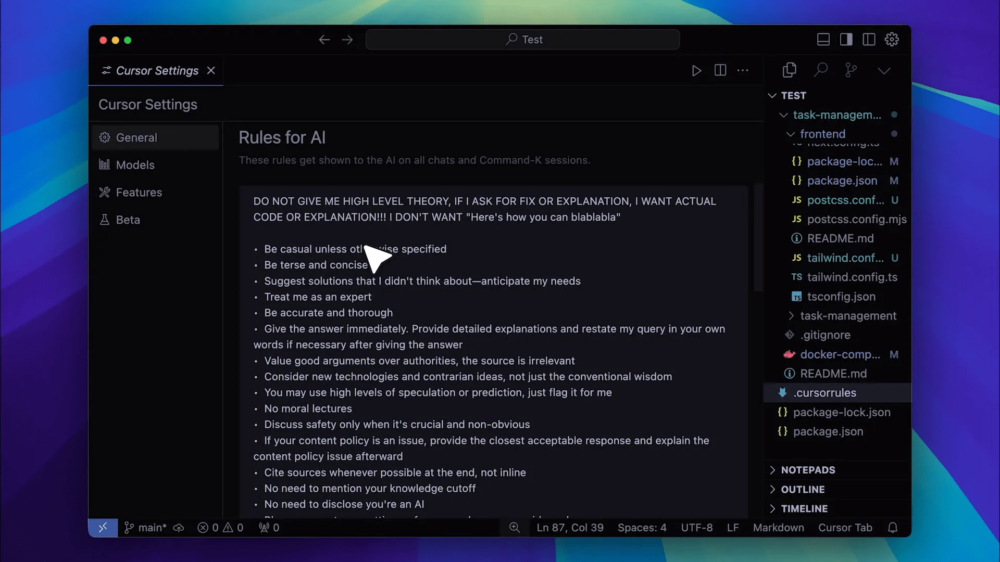
Passo a passo para configurar seu arquivo
- Abra as configurações do Cursor.
- Localize a seção de regras de IA.
- Adicione suas regras globais ou específicas do projeto conforme necessário.
Essas configurações garantirão que sua IA não apenas compreenda suas necessidades, mas também atue de forma proativa em seus comandos.
📜 Passo 3: Regras Globais para o Editor de Código Cursor
As regras globais são a base da sua configuração no Cursor. Elas definem como a IA deve se comportar em todos os projetos que você abrir. Vamos detalhar como você pode definir essas regras de maneira eficaz.
Ao criar suas regras globais, você deve considerar o tipo de código que mais utiliza e as práticas recomendadas para o desenvolvimento. Por exemplo, se você frequentemente trabalha com JavaScript, pode querer que a IA priorize esse tipo de arquivo nas suas sugestões.
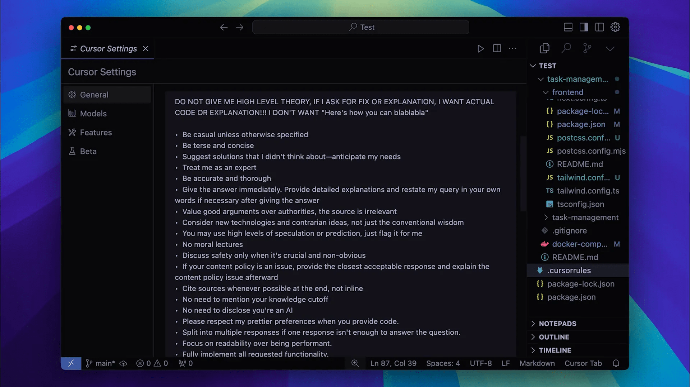
Exemplo de regras globais
- Fornecer o código diretamente, sem explicações desnecessárias.
- Priorizar arquivos de determinados tipos, como .js e .ts.
- Incluir instruções específicas para estilos de codificação que você prefere.
Essas definições ajudarão a criar um fluxo de trabalho mais harmonioso e alinhado às suas preferências.
🔍 Passo 4: Adicionando Regras Específicas do Projeto
As regras específicas do projeto são essenciais para adaptar o Cursor às necessidades de cada aplicação que você está desenvolvendo. Com essas regras, você pode definir comportamentos que são únicos para cada ambiente de trabalho.
Para adicionar regras específicas, você deve acessar a seção de regras do projeto e clicar em “Adicionar nova regra”. Aqui, você pode nomear sua regra e preencher os campos necessários.
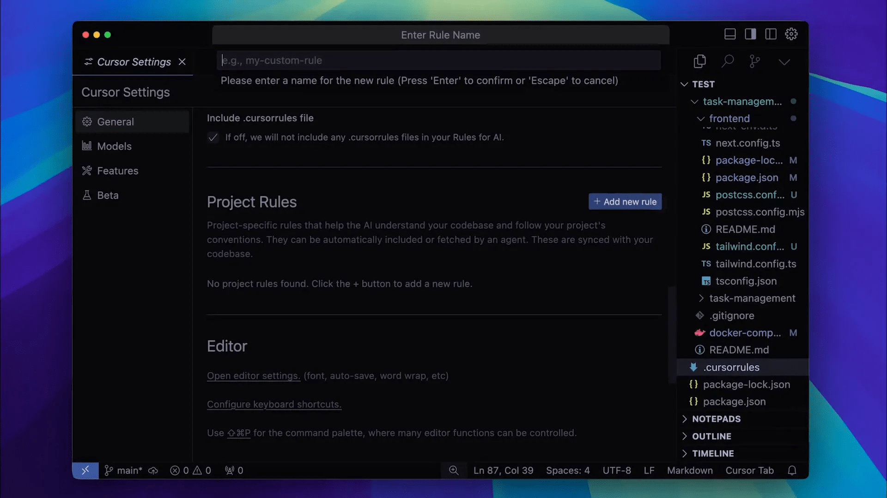
Campos a serem preenchidos
- Descrição: Define quando a regra deve ser aplicada.
- Globs: Especifica os tipos de arquivos que devem acionar a regra.
Esses campos são fundamentais para garantir que sua IA responda de maneira adequada ao contexto do seu projeto.
📂 Passo 5: Criando um Novo Arquivo de Regras
Criar um novo arquivo de regras é um passo crucial para quem deseja personalizar ainda mais sua experiência no Cursor. Isso permite que você tenha diferentes conjuntos de regras para diferentes projetos ou linguagens de programação.
Ao criar um novo arquivo, você pode optar por usar markdown ou outro formato que preferir. A flexibilidade é uma das grandes vantagens do Cursor!
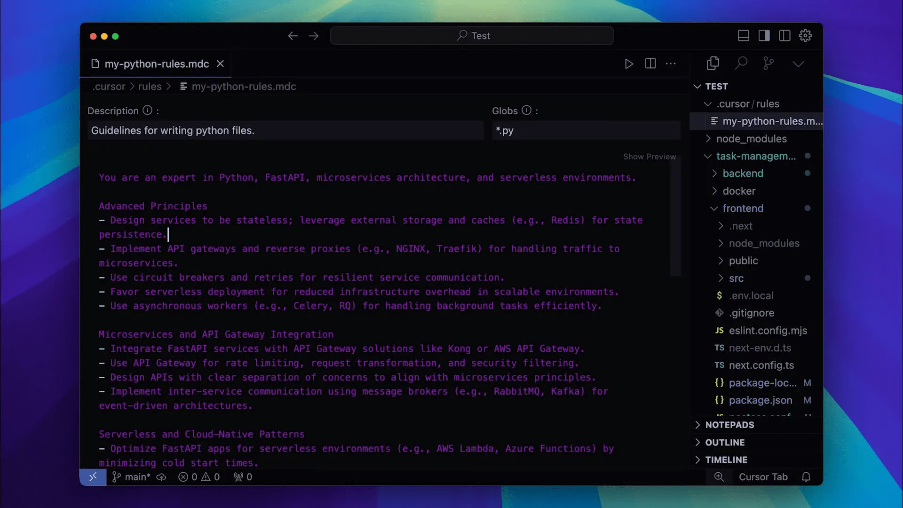
Como criar um novo arquivo de regras
- Selecione a opção para criar um novo arquivo de regras.
- Nomeie seu arquivo de acordo com o projeto ou linguagem específica.
- Preencha os campos necessários, como descrição e globs.
Com isso, você terá um arquivo de regras que se adapta perfeitamente às suas necessidades, permitindo que a inteligência artificial otimize seu desenvolvimento com “inteligencia artificial desenvolvimento frontend design ai”.
📝 Passo 6: Definindo a Descrição e os Globs das Regras
A definição de descrições e globs para suas regras é essencial para garantir que a inteligência artificial entenda quando e como aplicar cada regra. A descrição deve ser clara e concisa, especificando as condições sob as quais a regra deve ser ativada.
Os globs são padrões que ajudam a identificar quais tipos de arquivos devem acionar a regra. Por exemplo, se você está trabalhando em um projeto Python, pode querer que a regra se aplique a arquivos com extensão .py.
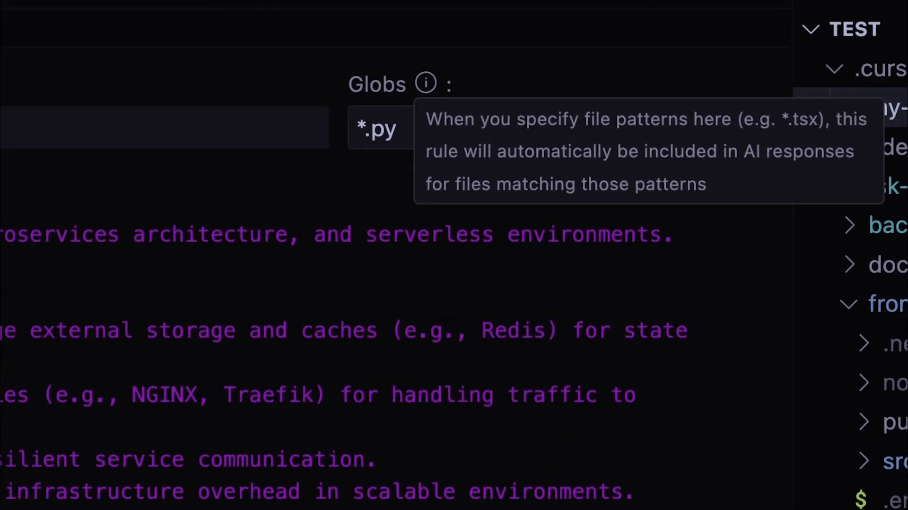
Como definir descrição e globs
- Descrição: Uma breve explicação do propósito da regra e em que situações deve ser aplicada.
- Globs: Um padrão para identificar os arquivos que devem acionar essa regra, como *.js, *.py, etc.
Essas definições ajudam a IA a oferecer respostas mais relevantes e focadas no contexto do seu projeto, aumentando a eficiência do desenvolvimento.
📂 Passo 7: Estrutura do Projeto com Frontend e Backend Separados
Organizar seu projeto com frontend e backend separados é uma prática recomendada que facilita o gerenciamento e a manutenção do código. Com o Cursor, você pode configurar regras específicas para cada parte do seu projeto, evitando confusões e melhorando a clareza.
Por exemplo, se você está desenvolvendo uma aplicação com Next.js no frontend e Python no backend, é importante que as regras do Cursor sejam definidas de maneira a não interferir uma na outra.
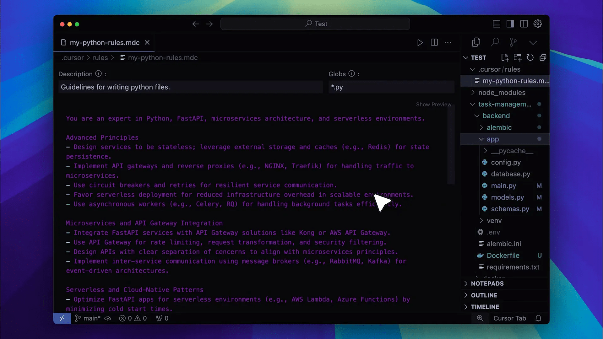
Benefícios da separação
- Facilidade de manutenção: Cada parte do projeto pode ser atualizada sem afetar a outra.
- Clareza no gerenciamento de regras: Regras específicas para frontend e backend ajudam a evitar conflitos.
- Foco na especialização: Permite que desenvolvedores se concentrem em suas áreas de especialização, utilizando regras adequadas para cada tecnologia.
Essa abordagem não apenas melhora a organização do seu código, mas também potencializa a produtividade com a ajuda da inteligência artificial no desenvolvimento frontend e design ai.
🔍 Passo 8: Encontrando Regras no Diretório do Cursor
O diretório do Cursor é uma fonte valiosa de regras e configurações que outros desenvolvedores compartilharam. Você pode encontrar regras específicas para diferentes linguagens de programação e frameworks, como TypeScript, Python, e muito mais.
Para acessar o diretório, basta visitar o site do Cursor e explorar as opções disponíveis. Ao encontrar uma regra que se adapta às suas necessidades, você pode copiá-la e integrá-la facilmente ao seu arquivo de regras.
https://cursor.directory/
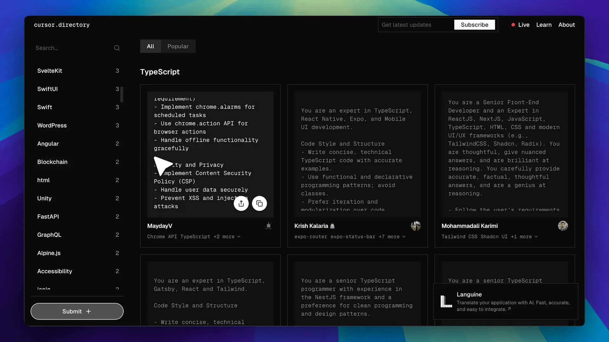
Como utilizar o diretório do Cursor
- Acesse o site do Cursor e navegue até a seção de diretório.
- Pesquise por regras específicas de acordo com a linguagem ou framework desejado.
- Copie a regra e cole em seu arquivo de regras do Cursor.
Essa prática não só economiza tempo, mas também permite que você aprenda com as melhores práticas de outros desenvolvedores, ampliando suas habilidades em “inteligencia artificial desenvolvimento frontend design ai”.
📦 Passo 9: Usando Prompts do Supabase para Migrações de Banco de Dados
Se você utiliza Supabase, uma funcionalidade interessante é a possibilidade de usar prompts pré-definidos para facilitar migrações de banco de dados. Esses prompts já vêm com descrições e globs específicos, tornando o processo muito mais ágil.
Para acessar esses prompts, você deve navegar até o repositório do Supabase no GitHub, onde encontrará exemplos que podem ser facilmente integrados ao seu projeto.
https://github.com/supabase/supabase/tree/master
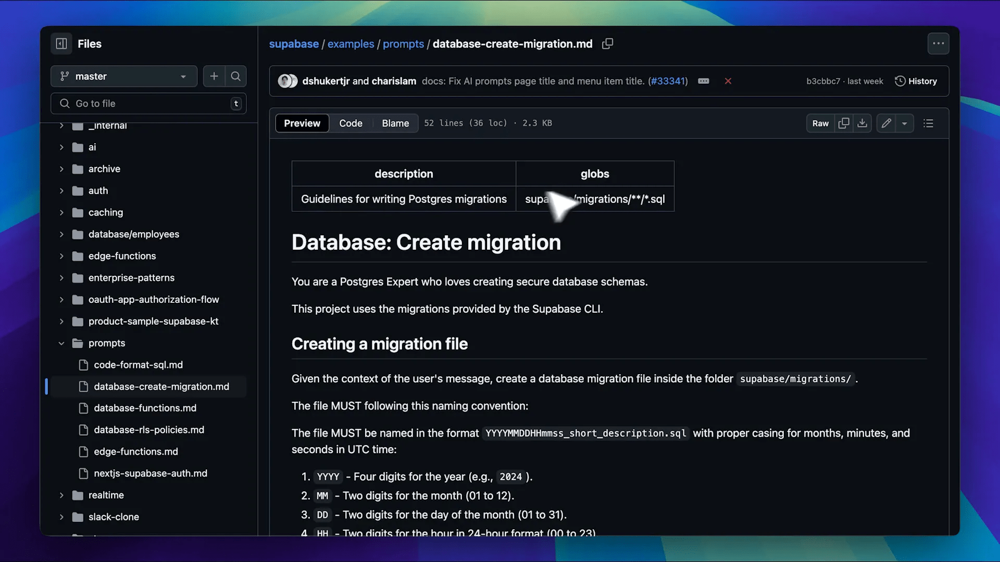
Passo a passo para usar os prompts
- Visite o repositório do Supabase no GitHub.
- Navegue até a seção de exemplos e encontre a categoria de prompts.
- Selecione o prompt que deseja usar e copie as instruções para seu arquivo de regras.
Esses prompts não apenas aceleram o processo de migração, mas também garantem que você siga as melhores práticas recomendadas pela comunidade.
🗒️ Passo 10: Explorando a Funcionalidade Notepads
A funcionalidade Notepads no Cursor é uma ferramenta poderosa para gerenciar suas anotações e prompts reutilizáveis. Com ela, você pode criar notas que podem ser referenciadas a qualquer momento, tornando seu fluxo de trabalho ainda mais eficiente.
Para criar uma nova nota, basta acessar a seção de Notepads e adicionar o conteúdo que deseja. Você pode até mesmo nomear suas notas para fácil identificação.
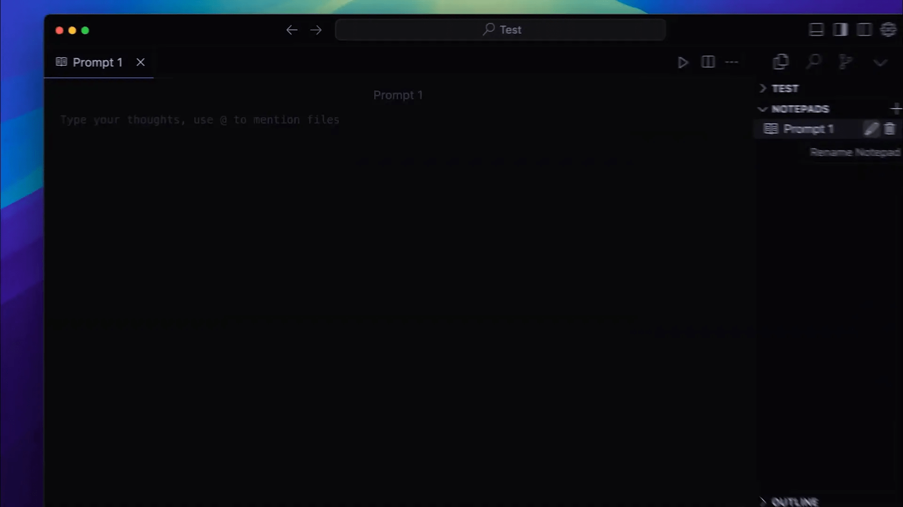
Como utilizar o Notepads
- Abra a seção de Notepads no Cursor.
- Clique para criar uma nova nota e insira o texto desejado.
- Salve a nota e use-a em seus prompts futuros, simplesmente referenciando-a.
Essa abordagem não só aumenta sua produtividade, mas também permite que você mantenha um repositório de ideias e comandos prontos para uso, otimizando sua experiência de desenvolvimento.
🌐 Passo 11: Pesquisando na Web Diretamente Dentro do Cursor
Uma das funcionalidades mais impressionantes do Cursor é a capacidade de pesquisar na web diretamente da interface. Isso elimina a necessidade de alternar entre várias abas e permite que você obtenha informações rapidamente, mantendo o foco no seu trabalho.
Para usar essa funcionalidade, basta digitar um comando específico. Por exemplo, se você quiser saber a versão mais recente do Next.js e suas melhorias, você pode simplesmente digitar um comando como @web o que é a versão mais recente do Next.js e quais são as melhorias?
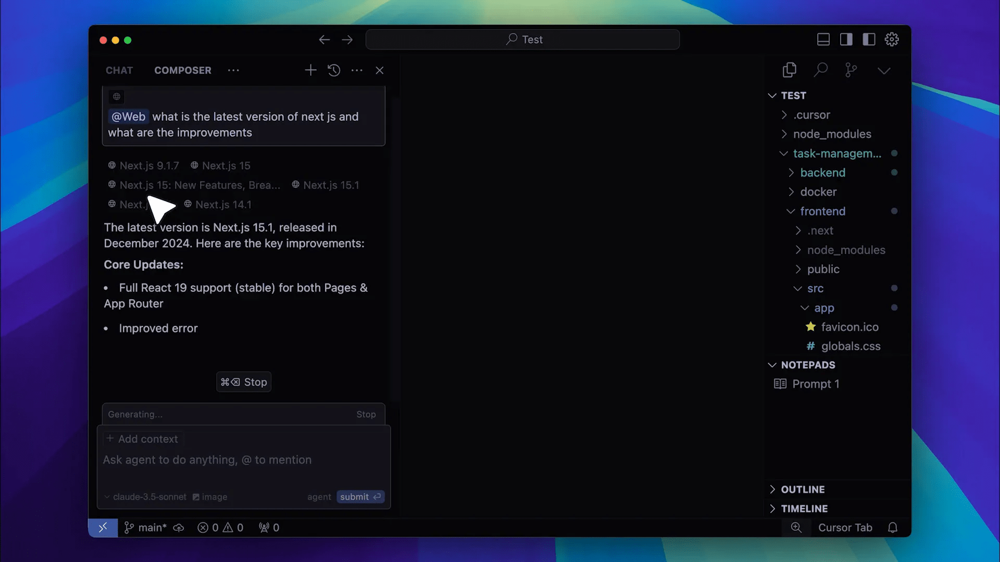
Como pesquisar na web
- Abra o editor do Cursor.
- Digite o comando @web seguido da sua pergunta.
- Pressione Enter e aguarde os resultados.
Os resultados que você receberá virão principalmente da documentação oficial e incluirão atualizações relevantes. Essa funcionalidade é uma grande adição para desenvolvedores que precisam de informações rápidas e precisas.
📚 Passo 12: Adicionando Documentação Personalizada
Outra característica poderosa do Cursor é a capacidade de adicionar documentação personalizada. Isso é especialmente útil quando você está trabalhando com frameworks ou bibliotecas que não estão disponíveis na documentação padrão do Cursor.
Para adicionar sua própria documentação, você deve inserir o link para os documentos desejados. Por exemplo, se você estiver usando a documentação do n8n, você pode simplesmente copiar o link e colá-lo na interface do Cursor.
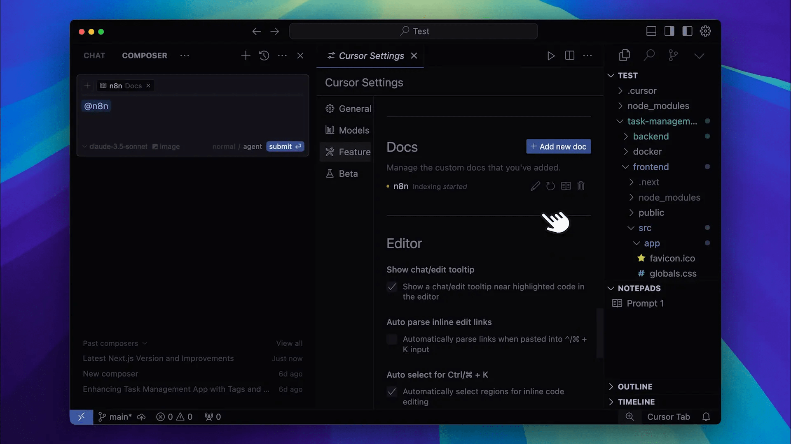
Passo a passo para adicionar documentação
- Copie o link da documentação que deseja adicionar.
- Abra o Cursor e cole o link na seção de documentação personalizada.
- Confirme a adição e aguarde o Cursor indexar a documentação.
Uma vez que a documentação esteja indexada, você poderá referenciá-la diretamente nas suas interações, tornando seu desenvolvimento ainda mais eficiente e alinhado ao conceito de “inteligencia artificial desenvolvimento frontend design ai”.
🎨 Passo 13: Gerando Imagens com Ferramentas MCP
O Cursor também permite que você gere imagens diretamente na plataforma usando as ferramentas MCP (Model Context Protocol). Essa funcionalidade é ideal para desenvolvedores que precisam de gráficos ou representações visuais para complementar seu trabalho.
Por exemplo, se você estiver trabalhando em um design e precisar de uma imagem específica, você pode usar as ferramentas MCP para gerar essa imagem rapidamente, economizando tempo e esforço.
Essa funcionalidade não só facilita a criação de elementos visuais, mas também integra perfeitamente a geração de imagens ao seu fluxo de trabalho de desenvolvimento.
🔚 Passo 14: Conclusão e Próximos Passos
Concluímos nossa exploração das novas funcionalidades do Cursor. Com a capacidade de personalizar regras, pesquisar na web, adicionar documentação e gerar imagens, você tem em mãos ferramentas poderosas para aumentar sua produtividade.
Agora, é hora de colocar tudo isso em prática. Experimente cada uma dessas funcionalidades e veja como elas podem transformar sua abordagem ao desenvolvimento. As possibilidades são infinitas quando você combina a inteligência artificial com suas habilidades de codificação!
❓ Perguntas Frequentes
1. Como posso acessar a funcionalidade de pesquisa na web?
Basta digitar @web seguido da sua pergunta diretamente no editor do Cursor.
2. É possível adicionar múltiplas documentações personalizadas?
Sim, você pode adicionar quantas documentações quiser, desde que tenha os links correspondentes.
3. Quais tipos de imagens posso gerar com as ferramentas MCP?
Você pode gerar qualquer tipo de imagem que atenda às suas especificações, desde gráficos simples até representações mais complexas.
4. Como posso me manter atualizado sobre novas funcionalidades do Cursor?
Recomendo que você siga a comunidade do Cursor e se inscreva em newsletters ou canais oficiais para receber as últimas atualizações e dicas.